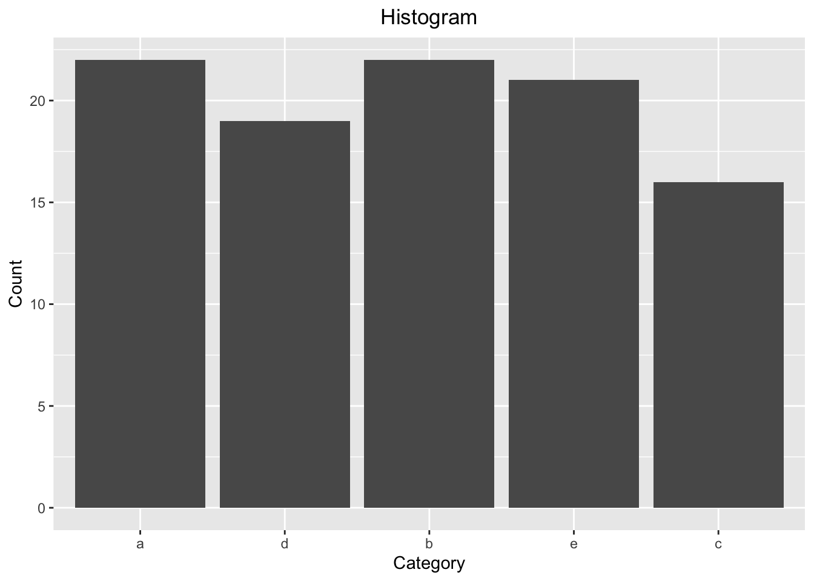
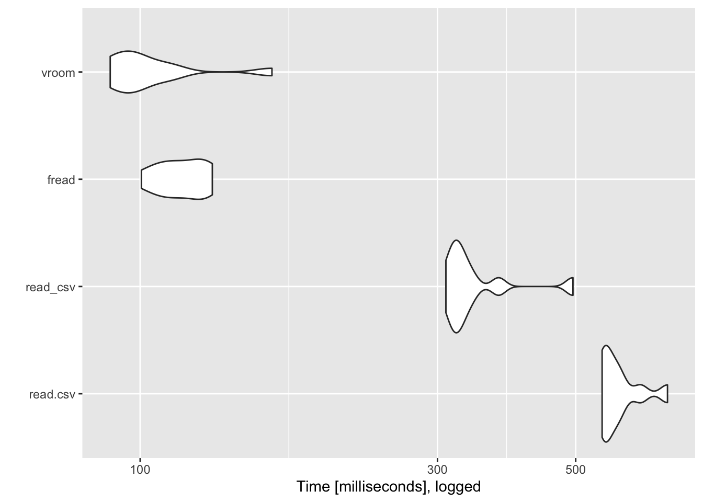

What is Literate programming?
“Programs are meant to be read by humans and only incidentally for computers to execute.” ― Donald Knuth
R markdowns are programs that mix a markup language (i.e., markdown) with programming languages (e.g., R) to best communicate compared to having either one in isolation. Many markdown features are implemented such as bold, italics, bold and italics or hyperlinks such as the previous example. It is easily integrated withing RStudio the flagship integrated development environment (IDE) for R.
Many newcomers and advanced users alike can benefit from customizing their RStudio global options. For example, I personally like a dark dark mode theme such as Tomorrow Night 80. Many options under the Code menu can help you adhere to best practices, catch issues, or follow a standard coding style.
.Rprofile in the HOME directory can be used to
modify startup behaviorFor example, my .Rprofile file has the following
code
Sys.setenv(TZ = 'EST')
if (interactive()) {
try(expr = fortunes::fortune(), silent = TRUE)
}
cat("Welcome, Nosferican.\nLogged at: ", as.character(Sys.time()))## Welcome, Nosferican.
## Logged at: 2023-07-06 09:07:17which displays an R fortune cookie, my username and current time when I start a session. The fortune cookie is a random piece of R history/culture very useful to understand the philosophy behind the project.
.Renviron file can be used to define variables
accessible during your sessionFor example, rather than writing my database credentials and making those avaiable in the code I can specify these as environmental variables I can access without compromising these
db_userid = "[your computing ID]"
db_pwd = "[your database pwd]"For the following lesson, we will be using various functionality available in R packages. The following code will make the namespace (e.g., functions) available for us to use.
The next block of code will provide all the functionality we will be using during this lesson
library(magrittr)## Warning: package 'magrittr' was built under R version 4.1.2##
## Attaching package: 'magrittr'## The following object is masked from 'package:purrr':
##
## set_names## The following object is masked from 'package:tidyr':
##
## extractlibrary(stringr)
library(forcats)
library(lubridate)
library(ggplot2)R has six atomic data types:
logicalintegernumeric (alias for double precision)complexcharacterrawx <- c(NA, FALSE, TRUE)
names(x = x) <- as.character(x = x)
x## <NA> FALSE TRUE
## NA FALSE TRUE& Table
outer(X = x, Y = x, FUN = "&")## <NA> FALSE TRUE
## <NA> NA FALSE NA
## FALSE FALSE FALSE FALSE
## TRUE NA FALSE TRUE| Table
outer(X = x, Y = x, FUN = "|")## <NA> FALSE TRUE
## <NA> NA NA TRUE
## FALSE NA FALSE TRUE
## TRUE TRUE TRUE TRUExor Table
outer(X = x, Y = x, FUN = "xor")## <NA> FALSE TRUE
## <NA> NA NA NA
## FALSE NA FALSE TRUE
## TRUE NA TRUE FALSENegation
!TRUE## [1] FALSE!FALSE## [1] TRUELogical interpretation of integers/numeric
TRUE & 0 # (TRUE & (0 == 0))## [1] FALSEFALSE | -2 # (FALSE | (-2 == 0))## [1] TRUEx = 2L
y = 3L
+x # Positive sign## [1] 2-x # Negative sign## [1] -2abs(x = x)## [1] 2x + y## [1] 5x - y## [1] -1x * y## [1] 6x / y## [1] 0.6666667x^y## [1] 8sqrt(x = x)## [1] 1.414214x %% y # Modulus## [1] 2x %/% y # Integer division## [1] 0log(x = x)## [1] 0.6931472exp(x = x)## [1] 7.389056factorial(x = x)## [1] 2x = 2.5
y = 3.2+x # Positive sign## [1] 2.5-x # Negative sign## [1] -2.5abs(x = x)## [1] 2.5x + y## [1] 5.7x - y## [1] -0.7x * y## [1] 8x / y## [1] 0.78125x^y## [1] 18.76757sqrt(x = x) ## [1] 1.581139x %% y # Modulus## [1] 2.5x %/% y # Integer division## [1] 0log(x = x) # Log (defaults to natual log)## [1] 0.9162907exp(x = x)## [1] 12.18249factorial(x = x)## [1] 3.323351round(x = x, digits = 2L)## [1] 2.5floor(x = x)## [1] 2ceiling(x = x)## [1] 3x = 2 + 1i
y = 3 + 1i+x # Positive sign## [1] 2+1i-x # Negative sign## [1] -2-1iabs(x = x)## [1] 2.236068x + y## [1] 5+2ix - y## [1] -1+0ix * y## [1] 5+5ix / y## [1] 0.7+0.1ix^y## [1] -4.113793+5.703463isqrt(x = x)## [1] 1.455347+0.343561ilog(x = x) # Log (defaults to natual log)## [1] 0.804719+0.4636476iexp(x = x)## [1] 3.992324+6.217676ix == y## [1] FALSEis.complex(x = x)## [1] TRUERe(z = x)## [1] 2Im(z = x)## [1] 1Mod(z = x)## [1] 2.236068Arg(z = x)## [1] 0.4636476Conj(z = x)## [1] 2-1ix <- "\"R doesn't like emojis :(, Julia does.\" - Bayoán (史志鼎)"
str_detect(string = x, pattern = "Bayoán")## [1] TRUEstr_detect(string = x, pattern = "Nosferican")## [1] FALSEstr_extract(string = x, pattern = "(?<=\" - ).*")## [1] "Bayoán (史志鼎)"str_sub(string = x, start = 28L, end = 32L)## [1] "Julia"str_replace(string = x, pattern = "(?<=\" - ).*", "Me")## [1] "\"R doesn't like emojis :(, Julia does.\" - Me"str_remove(string = x, pattern = "e")## [1] "\"R dosn't like emojis :(, Julia does.\" - Bayoán (史志鼎)"str_replace_all(string = x, pattern = "e", replace = "E")## [1] "\"R doEsn't likE Emojis :(, Julia doEs.\" - Bayoán (史志鼎)"str_c("This a fine quote.", x, sep = " ")## [1] "This a fine quote. \"R doesn't like emojis :(, Julia does.\" - Bayoán (史志鼎)"Arrays are collections of homogeneous data types. The most common
types are the one dimensional array (vector) and the two
dimensional array (matrix).
vector(mode = "logical", length = 2L)## [1] FALSE FALSEvector(mode = "character", length = 5L)## [1] "" "" "" "" ""vector(mode = "numeric", length = 3L)## [1] 0 0 0vector(mode = "integer", length = 4L)## [1] 0 0 0 0x <- 1:10
str(object = x)## int [1:10] 1 2 3 4 5 6 7 8 9 10summary(object = x)## Min. 1st Qu. Median Mean 3rd Qu. Max.
## 1.00 3.25 5.50 5.50 7.75 10.00table(origininal_object = x)## origininal_object
## 1 2 3 4 5 6 7 8 9 10
## 1 1 1 1 1 1 1 1 1 1x[2:5] <- 1L
table(modified_object = x)## modified_object
## 1 6 7 8 9 10
## 5 1 1 1 1 1x[11] <- NA
typeof(x)## [1] "integer"sort(x = x, decreasing = TRUE, na.last = TRUE) # default values TRUE and NA## [1] 10 9 8 7 6 1 1 1 1 1 NAx[13] <- "A"
x## [1] "1" "1" "1" "1" "1" "6" "7" "8" "9" "10" NA NA "A"is.vector(x = x)## [1] TRUEx <- matrix(data = 1:16,
nrow = 4L,
ncol = 4L,
dimnames = list(LETTERS[1:4], letters[1:4]))
x + 2 * x## a b c d
## A 3 15 27 39
## B 6 18 30 42
## C 9 21 33 45
## D 12 24 36 48x %*% x## a b c d
## A 90 202 314 426
## B 100 228 356 484
## C 110 254 398 542
## D 120 280 440 600str(object = x)## int [1:4, 1:4] 1 2 3 4 5 6 7 8 9 10 ...
## - attr(*, "dimnames")=List of 2
## ..$ : chr [1:4] "A" "B" "C" "D"
## ..$ : chr [1:4] "a" "b" "c" "d"summary(object = x)## a b c d
## Min. :1.00 Min. :5.00 Min. : 9.00 Min. :13.00
## 1st Qu.:1.75 1st Qu.:5.75 1st Qu.: 9.75 1st Qu.:13.75
## Median :2.50 Median :6.50 Median :10.50 Median :14.50
## Mean :2.50 Mean :6.50 Mean :10.50 Mean :14.50
## 3rd Qu.:3.25 3rd Qu.:7.25 3rd Qu.:11.25 3rd Qu.:15.25
## Max. :4.00 Max. :8.00 Max. :12.00 Max. :16.00table(x)## x
## 1 2 3 4 5 6 7 8 9 10 11 12 13 14 15 16
## 1 1 1 1 1 1 1 1 1 1 1 1 1 1 1 1x[3, 2] <- NA
x## a b c d
## A 1 5 9 13
## B 2 6 10 14
## C 3 NA 11 15
## D 4 8 12 16x <- array(data = 1:3, dim = c(2L, 4L, 3L))
x## , , 1
##
## [,1] [,2] [,3] [,4]
## [1,] 1 3 2 1
## [2,] 2 1 3 2
##
## , , 2
##
## [,1] [,2] [,3] [,4]
## [1,] 3 2 1 3
## [2,] 1 3 2 1
##
## , , 3
##
## [,1] [,2] [,3] [,4]
## [1,] 2 1 3 2
## [2,] 3 2 1 3str(object = x)## int [1:2, 1:4, 1:3] 1 2 3 1 2 3 1 2 3 1 ...dim(x = x)## [1] 2 4 3x = list(x = 1:5, y = TRUE, z = c("A", "Z"))
str(object = x)## List of 3
## $ x: int [1:5] 1 2 3 4 5
## $ y: logi TRUE
## $ z: chr [1:2] "A" "Z"x$z## [1] "A" "Z"x$A <- 23L
x## $x
## [1] 1 2 3 4 5
##
## $y
## [1] TRUE
##
## $z
## [1] "A" "Z"
##
## $A
## [1] 23x[1L]## $x
## [1] 1 2 3 4 5x[[1L]]## [1] 1 2 3 4 5x[[4]] <- list(a = 3, b = 2)
x## $x
## [1] 1 2 3 4 5
##
## $y
## [1] TRUE
##
## $z
## [1] "A" "Z"
##
## $A
## $A$a
## [1] 3
##
## $A$b
## [1] 2x$A$b## [1] 2Date time objects are structs can wrap an atomic data element for special functionality
x <- now()
year(x = x)## [1] 2023month(x = x)## [1] 7day(x = x)## [1] 6hour(x = x)## [1] 9minute(x = x)## [1] 7seconds(x = 1)## [1] "1S"x %m+% months(x = 1L, abbreviate = TRUE)## [1] "2023-08-06 09:07:17 EST"Named vectors are an example of a struct with more than one atomic data type element
x <- c(a = 1, b = 2)
str(object = x)## Named num [1:2] 1 2
## - attr(*, "names")= chr [1:2] "a" "b"names(x = x)## [1] "a" "b"One last example includes categorical or factor variables
set.seed(seed = 0L)
x <- as_factor(x = sample(x = letters[1:5], size = 100L, replace = TRUE))
str(x)## Factor w/ 5 levels "a","d","b","e",..: 1 2 1 3 4 5 3 5 5 1 ...x[10L]## [1] a
## Levels: a d b e clevels(x = x)## [1] "a" "d" "b" "e" "c"ggplot(mapping = aes(x = x)) +
geom_bar() +
labs(title = "Histogram",
x = "Category",
y = "Count") +
theme(plot.title = element_text(hjust = 0.5))
author: Aaron D. Schroeder date: 6/5/2020 autosize: true
df1 <- data.frame(a = seq(1,16,by=2), b = LETTERS[1:8], x=month.abb[1:8], y = sample(10:20,10000, replace = TRUE), z=letters[1:8])
data.table::fwrite(df1, "sample_small.csv")
df2 <- data.frame(a = seq(1,16,by=2), b = LETTERS[1:8], x=month.abb[1:8], y = sample(10:20,1000000, replace = TRUE), z=letters[1:8])
data.table::fwrite(df2, "sample_medium.csv")
df3 <- data.frame(a = seq(1,16,by=2), b = LETTERS[1:8], x=month.abb[1:8], y = sample(10:20,10000000, replace = TRUE), z=letters[1:8])
data.table::fwrite(df3, "sample_large.csv")system.time(read.csv <- read.csv("sample_large.csv", stringsAsFactors =
FALSE))## user system elapsed
## 7.469 0.540 8.057library(readr)
system.time(read_csv <- read_csv("sample_large.csv", progress = FALSE))## Rows: 10000000 Columns: 5── Column specification ─────────────────────────────────────────────
## Delimiter: ","
## chr (3): b, x, z
## dbl (2): a, y
## ℹ Use `spec()` to retrieve the full column specification for this data.
## ℹ Specify the column types or set `show_col_types = FALSE` to quiet this message.## user system elapsed
## 8.059 0.274 3.034library(data.table)##
## Attaching package: 'data.table'## The following objects are masked from 'package:lubridate':
##
## hour, isoweek, mday, minute, month, quarter, second, wday, week,
## yday, year## The following objects are masked from 'package:dplyr':
##
## between, first, last## The following object is masked from 'package:purrr':
##
## transposesystem.time(fread <- fread("sample_large.csv"))## user system elapsed
## 1.005 0.059 1.072fread("pigeon-racing.csv", drop = 4:11)## Pos Breeder Pigeon
## 1: 1 Texas Outlaws 19633-AU15-FOYS
## 2: 2 Junior Juanich 0402-AU15-JRL
## 3: 3 Jerry Allensworth 0404-AU15-VITA
## 4: 4 Alias-Alias 2013-AU15-ALIA
## 5: 5 Greg Glazier 5749-AU15-SLI
## ---
## 396: 396 Hutchins/Milner 2496-AU15-VITA
## 397: 397 Twin200 7799-AU15-VITA
## 398: 398 Mayberry Classic 5508-AU15-MAC
## 399: 399 Sierra Ranch Classic 0519-AU15-SIER
## 400: 400 Hi-Cal Connection 0798-AU15-HAWAfread("pigeon-racing.csv", select = c(1, 2, 3))## Pos Breeder Pigeon
## 1: 1 Texas Outlaws 19633-AU15-FOYS
## 2: 2 Junior Juanich 0402-AU15-JRL
## 3: 3 Jerry Allensworth 0404-AU15-VITA
## 4: 4 Alias-Alias 2013-AU15-ALIA
## 5: 5 Greg Glazier 5749-AU15-SLI
## ---
## 396: 396 Hutchins/Milner 2496-AU15-VITA
## 397: 397 Twin200 7799-AU15-VITA
## 398: 398 Mayberry Classic 5508-AU15-MAC
## 399: 399 Sierra Ranch Classic 0519-AU15-SIER
## 400: 400 Hi-Cal Connection 0798-AU15-HAWAfread("pigeon-racing.csv", drop = c("Name", "Arrival"))## Pos Breeder Pigeon Color Sex Ent Speed To Win
## 1: 1 Texas Outlaws 19633-AU15-FOYS BCWF H 1 172.155 0:00:00
## 2: 2 Junior Juanich 0402-AU15-JRL SIWF H 1 163.569 0:05:21
## 3: 3 Jerry Allensworth 0404-AU15-VITA BB H 1 163.442 0:05:27
## 4: 4 Alias-Alias 2013-AU15-ALIA BBSP H 1 163.392 0:05:28
## 5: 5 Greg Glazier 5749-AU15-SLI BC H 1 163.366 0:05:30
## ---
## 396: 396 Hutchins/Milner 2496-AU15-VITA BB H 5 90.901 1:31:23
## 397: 397 Twin200 7799-AU15-VITA SIL H 2 87.817 1:38:10
## 398: 398 Mayberry Classic 5508-AU15-MAC BBSP H 2 83.929 1:47:28
## 399: 399 Sierra Ranch Classic 0519-AU15-SIER BC H 6 78.286 2:02:34
## 400: 400 Hi-Cal Connection 0798-AU15-HAWA BB H 5 76.677 2:07:18
## Eligible
## 1: Yes
## 2: Yes
## 3: Yes
## 4: Yes
## 5: Yes
## ---
## 396: Yes
## 397: Yes
## 398: Yes
## 399: Yes
## 400: Yesfread("pigeon-racing.csv", select = c("Breeder", "Speed"))## Breeder Speed
## 1: Texas Outlaws 172.155
## 2: Junior Juanich 163.569
## 3: Jerry Allensworth 163.442
## 4: Alias-Alias 163.392
## 5: Greg Glazier 163.366
## ---
## 396: Hutchins/Milner 90.901
## 397: Twin200 87.817
## 398: Mayberry Classic 83.929
## 399: Sierra Ranch Classic 78.286
## 400: Hi-Cal Connection 76.677#library(vroom)
#system.time(vroom <- vroom("sample_large.csv"))library(microbenchmark)## Warning: package 'microbenchmark' was built under R version 4.1.2library(here)## here() starts at /Users/joannaschroeder/Documents/R/intro-rmd-websites#results_vroom <- microbenchmark(
#read.csv = read.csv(file = here("static", "data", "sim-data-large.csv")),
#read_csv = read_csv(file = here("static", "data", "sim-data-large.csv")),
#vroom = vroom::vroom(file = here("static", "data", "sim-data-large.csv"))
#)results <- microbenchmark(
read.csv = read.csv(file = "sample_medium.csv", stringsAsFactors =
FALSE),
read_csv = read_csv(file = "sample_medium.csv", progress = FALSE),
fread = fread(file = "sample_medium.csv"),
vroom = vroom::vroom(file = "sample_medium.csv"),
times = 10
)## Rows: 1000000 Columns: 5── Column specification ─────────────────────────────────────────────
## Delimiter: ","
## chr (3): b, x, z
## dbl (2): a, y
## ℹ Use `spec()` to retrieve the full column specification for this data.
## ℹ Specify the column types or set `show_col_types = FALSE` to quiet this message.Rows: 1000000 Columns: 5── Column specification ─────────────────────────────────────────────
## Delimiter: ","
## chr (3): b, x, z
## dbl (2): a, y
## ℹ Use `spec()` to retrieve the full column specification for this data.
## ℹ Specify the column types or set `show_col_types = FALSE` to quiet this message.Rows: 1000000 Columns: 5── Column specification ─────────────────────────────────────────────
## Delimiter: ","
## chr (3): b, x, z
## dbl (2): a, y
## ℹ Use `spec()` to retrieve the full column specification for this data.
## ℹ Specify the column types or set `show_col_types = FALSE` to quiet this message.Rows: 1000000 Columns: 5── Column specification ─────────────────────────────────────────────
## Delimiter: ","
## chr (3): b, x, z
## dbl (2): a, y
## ℹ Use `spec()` to retrieve the full column specification for this data.
## ℹ Specify the column types or set `show_col_types = FALSE` to quiet this message.Rows: 1000000 Columns: 5── Column specification ─────────────────────────────────────────────
## Delimiter: ","
## chr (3): b, x, z
## dbl (2): a, y
## ℹ Use `spec()` to retrieve the full column specification for this data.
## ℹ Specify the column types or set `show_col_types = FALSE` to quiet this message.Rows: 1000000 Columns: 5── Column specification ─────────────────────────────────────────────
## Delimiter: ","
## chr (3): b, x, z
## dbl (2): a, y
## ℹ Use `spec()` to retrieve the full column specification for this data.
## ℹ Specify the column types or set `show_col_types = FALSE` to quiet this message.Rows: 1000000 Columns: 5── Column specification ─────────────────────────────────────────────
## Delimiter: ","
## chr (3): b, x, z
## dbl (2): a, y
## ℹ Use `spec()` to retrieve the full column specification for this data.
## ℹ Specify the column types or set `show_col_types = FALSE` to quiet this message.Rows: 1000000 Columns: 5── Column specification ─────────────────────────────────────────────
## Delimiter: ","
## chr (3): b, x, z
## dbl (2): a, y
## ℹ Use `spec()` to retrieve the full column specification for this data.
## ℹ Specify the column types or set `show_col_types = FALSE` to quiet this message.Rows: 1000000 Columns: 5── Column specification ─────────────────────────────────────────────
## Delimiter: ","
## chr (3): b, x, z
## dbl (2): a, y
## ℹ Use `spec()` to retrieve the full column specification for this data.
## ℹ Specify the column types or set `show_col_types = FALSE` to quiet this message.Rows: 1000000 Columns: 5── Column specification ─────────────────────────────────────────────
## Delimiter: ","
## chr (3): b, x, z
## dbl (2): a, y
## ℹ Use `spec()` to retrieve the full column specification for this data.
## ℹ Specify the column types or set `show_col_types = FALSE` to quiet this message.Rows: 1000000 Columns: 5── Column specification ─────────────────────────────────────────────
## Delimiter: ","
## chr (3): b, x, z
## dbl (2): a, y
## ℹ Use `spec()` to retrieve the full column specification for this data.
## ℹ Specify the column types or set `show_col_types = FALSE` to quiet this message.Rows: 1000000 Columns: 5── Column specification ─────────────────────────────────────────────
## Delimiter: ","
## chr (3): b, x, z
## dbl (2): a, y
## ℹ Use `spec()` to retrieve the full column specification for this data.
## ℹ Specify the column types or set `show_col_types = FALSE` to quiet this message.Rows: 1000000 Columns: 5── Column specification ─────────────────────────────────────────────
## Delimiter: ","
## chr (3): b, x, z
## dbl (2): a, y
## ℹ Use `spec()` to retrieve the full column specification for this data.
## ℹ Specify the column types or set `show_col_types = FALSE` to quiet this message.Rows: 1000000 Columns: 5── Column specification ─────────────────────────────────────────────
## Delimiter: ","
## chr (3): b, x, z
## dbl (2): a, y
## ℹ Use `spec()` to retrieve the full column specification for this data.
## ℹ Specify the column types or set `show_col_types = FALSE` to quiet this message.Rows: 1000000 Columns: 5── Column specification ─────────────────────────────────────────────
## Delimiter: ","
## chr (3): b, x, z
## dbl (2): a, y
## ℹ Use `spec()` to retrieve the full column specification for this data.
## ℹ Specify the column types or set `show_col_types = FALSE` to quiet this message.Rows: 1000000 Columns: 5── Column specification ─────────────────────────────────────────────
## Delimiter: ","
## chr (3): b, x, z
## dbl (2): a, y
## ℹ Use `spec()` to retrieve the full column specification for this data.
## ℹ Specify the column types or set `show_col_types = FALSE` to quiet this message.Rows: 1000000 Columns: 5── Column specification ─────────────────────────────────────────────
## Delimiter: ","
## chr (3): b, x, z
## dbl (2): a, y
## ℹ Use `spec()` to retrieve the full column specification for this data.
## ℹ Specify the column types or set `show_col_types = FALSE` to quiet this message.Rows: 1000000 Columns: 5── Column specification ─────────────────────────────────────────────
## Delimiter: ","
## chr (3): b, x, z
## dbl (2): a, y
## ℹ Use `spec()` to retrieve the full column specification for this data.
## ℹ Specify the column types or set `show_col_types = FALSE` to quiet this message.Rows: 1000000 Columns: 5── Column specification ─────────────────────────────────────────────
## Delimiter: ","
## chr (3): b, x, z
## dbl (2): a, y
## ℹ Use `spec()` to retrieve the full column specification for this data.
## ℹ Specify the column types or set `show_col_types = FALSE` to quiet this message.Rows: 1000000 Columns: 5── Column specification ─────────────────────────────────────────────
## Delimiter: ","
## chr (3): b, x, z
## dbl (2): a, y
## ℹ Use `spec()` to retrieve the full column specification for this data.
## ℹ Specify the column types or set `show_col_types = FALSE` to quiet this message.library(ggplot2)
autoplot(object = results) +
scale_y_log10() +
labs(y = "Time [milliseconds], logged")## Scale for y is already present.
## Adding another scale for y, which will replace the existing scale.
n = c(2, 3, 5)
s = c("aa", "bb", "cc")
b = c(TRUE, FALSE, TRUE)
df = data.frame(n, s, b) # df is a data frame
df## n s b
## 1 2 aa TRUE
## 2 3 bb FALSE
## 3 5 cc TRUEdf <- data.frame(column_1 = c(1, 2, 3),
column_2 = c("A", "B", "C"),
column_3 = c("D", "E", "F"),
stringsAsFactors = F)
df## column_1 column_2 column_3
## 1 1 A D
## 2 2 B E
## 3 3 C Fpg <- fread("pigeon-racing.csv")df[df$column_1 == 2,] # have to include df$ before column name and don't forget the comma!## column_1 column_2 column_3
## 2 2 B Edf[df$column_1 == 2,]## column_1 column_2 column_3
## 2 2 B Elibrary(dplyr)
filter(df, column_1 == 2)## column_1 column_2 column_3
## 1 2 B Efilter(df, column_1 == 2)## column_1 column_2 column_3
## 1 2 B Elibrary(data.table)
setDT(df) # needs to be a data.table first
df[column_1 == 2]## column_1 column_2 column_3
## 1: 2 B Edf[column_1 == 2]## column_1 column_2 column_3
## 1: 2 B Edf[, c("column_2", "column_3")]## column_2 column_3
## 1: A D
## 2: B E
## 3: C Fselect(df, c("column_2", "column_3"))## column_2 column_3
## 1: A D
## 2: B E
## 3: C FsetDT(df) # needs to be a data.table first
df[, .(column_2, column_3)] # the dot . is a shortcut for list()## column_2 column_3
## 1: A D
## 2: B E
## 3: C Fdf[, .(column_2, column_3)]## column_2 column_3
## 1: A D
## 2: B E
## 3: C F# or just like a data.frame
df[, c("column_2", "column_3")]## column_2 column_3
## 1: A D
## 2: B E
## 3: C Fdf[df$column_1 == 2, c("column_2", "column_3")]## column_2 column_3
## 1: B Elibrary(dplyr)
# two steps using the magrittr "pipe"
df %>%
filter(column_1 == 2) %>%
select(c("column_2", "column_3")) # don't need to specifcy data.frame in second step## column_2 column_3
## 1: B EsetDT(df) # needs to be a data.table first
df[column_1 == 2, .(column_2, column_3)] # the dot . is a shortcut for list()## column_2 column_3
## 1: B E# or just like a data.frame
df[df$column_1 == 2, c("column_2", "column_3")]## column_2 column_3
## 1: B Edf <- data.frame(column_1 = c(1, 2, 3), column_b = c("A", "B", "C"))
print(df)## column_1 column_b
## 1 1 A
## 2 2 B
## 3 3 Cnames(df)[names(df) == 'column_b'] <- 'column_2'
print(df)## column_1 column_2
## 1 1 A
## 2 2 B
## 3 3 Clibrary(dplyr)
df <- data.frame(column_1 = c(1, 2, 3), column_b = c("A", "B", "C"))
print(df)## column_1 column_b
## 1 1 A
## 2 2 B
## 3 3 Cdf <- dplyr::rename(df, "column_2" = column_b)
print(df)## column_1 column_2
## 1 1 A
## 2 2 B
## 3 3 Clibrary(data.table)
df <- data.frame(column_1 = c(1, 2, 3), column_b = c("A", "B", "C"))
print(df)## column_1 column_b
## 1 1 A
## 2 2 B
## 3 3 Csetnames(df, "column_b", "column_2")
print(df)## column_1 column_2
## 1 1 A
## 2 2 B
## 3 3 Clibrary(data.table)
library(dplyr)
pg <- fread("pigeon-racing.csv")aggregate(Ent ~ Breeder, pg, length)## Breeder Ent
## 1 4-Birds 4
## 2 7-11 Syndicate 2
## 3 A P C Loft 12
## 4 Alias-Alias 11
## 5 Alonso Loft 3
## 6 American Lofts 4
## 7 Andy Skwiat 10
## 8 B D P Loft 3
## 9 Baldwin & Tilson 7
## 10 Baysideboys 3
## 11 Bionic Loft 2
## 12 Braden/Olivieri 2
## 13 Bud & Orie Loft 2
## 14 Bynum Family Lofts 5
## 15 Captain Chuck 10
## 16 Centmeyer Loft 2
## 17 Charlie's Little Loft 3
## 18 Churn Creek Loft 3
## 19 Clear Springs Loft 3
## 20 Credeur Family Loft 2
## 21 Crestview Loft 4
## 22 Crowley's Ridge Loft 2
## 23 Cypress Hills Farm 2
## 24 Dal-Tex R P C 3
## 25 Dave Dudley 3
## 26 Dave Harrett 6
## 27 Debbie Ganus 6
## 28 Drama Queen Loft 3
## 29 Dunn Loft 1
## 30 E & E Loft 3
## 31 Emerson/Krass 5
## 32 Equalizer Loft 4
## 33 Family Loft 12
## 34 Fisher Family Loft 5
## 35 Flyhome Loft 2
## 36 Flying D Loft 2 3
## 37 Ganus Family Loft 6
## 38 Goshentown Lofts 4
## 39 Greek Connection 5
## 40 Greg Glazier 4
## 41 Hi-Cal Connection 5
## 42 Hutchins/Milner 5
## 43 Iv Aces Loft 2
## 44 J & M Partridge Loft 4
## 45 Jb & D 13
## 46 Jerdee 6
## 47 Jerry Allensworth 4
## 48 Jerry Johnson 2
## 49 Junior Juanich 6
## 50 Kiko Arana 4
## 51 King City 3
## 52 Kokomo Loft 2
## 53 Kwan Loft 4
## 54 Leyba's Loft 3
## 55 Little Reata Loft 6
## 56 Loizzi/Sikora 5
## 57 Lonestar Loft 4
## 58 Mayberry Classic 2
## 59 Mc Laughlin Lofts 4
## 60 Mike Belus 2
## 61 Miller Loft 2 1
## 62 Milner-Mckinsey 8
## 63 Mr. Dovely 1
## 64 N C Syndicate 6
## 65 Nanez Family Lofts 4
## 66 Non Pareil Loft 4
## 67 Oscar/Ralph 1
## 68 P J Loft 3
## 69 Protege Loft 4
## 70 Rayce Loft 4
## 71 Redtex 12
## 72 Rick Barker 5
## 73 Sandstrom Brothers Loft 7
## 74 Shang N Dennis Yoh 5
## 75 Shawnie & Lenny Loft 4
## 76 Sierra Ranch Classic 6
## 77 Silver Dollar Loft 2
## 78 Skip's Janssens 5
## 79 Stelling Loft 4
## 80 Stenman Loft 10
## 81 T C R Loft 5
## 82 Terry Montgomery 2
## 83 Texas Outlaws 4
## 84 The Bailey Team 7
## 85 The Brand Syndicate 5
## 86 Tongol 11 3
## 87 Tony Family Lofts 3
## 88 Turk Loft 2
## 89 Twin200 2
## 90 Woodsend/Perry 9table(pg$Breeder)##
## 4-Birds 7-11 Syndicate A P C Loft
## 4 2 12
## Alias-Alias Alonso Loft American Lofts
## 11 3 4
## Andy Skwiat B D P Loft Baldwin & Tilson
## 10 3 7
## Baysideboys Bionic Loft Braden/Olivieri
## 3 2 2
## Bud & Orie Loft Bynum Family Lofts Captain Chuck
## 2 5 10
## Centmeyer Loft Charlie's Little Loft Churn Creek Loft
## 2 3 3
## Clear Springs Loft Credeur Family Loft Crestview Loft
## 3 2 4
## Crowley's Ridge Loft Cypress Hills Farm Dal-Tex R P C
## 2 2 3
## Dave Dudley Dave Harrett Debbie Ganus
## 3 6 6
## Drama Queen Loft Dunn Loft E & E Loft
## 3 1 3
## Emerson/Krass Equalizer Loft Family Loft
## 5 4 12
## Fisher Family Loft Flyhome Loft Flying D Loft 2
## 5 2 3
## Ganus Family Loft Goshentown Lofts Greek Connection
## 6 4 5
## Greg Glazier Hi-Cal Connection Hutchins/Milner
## 4 5 5
## Iv Aces Loft J & M Partridge Loft Jb & D
## 2 4 13
## Jerdee Jerry Allensworth Jerry Johnson
## 6 4 2
## Junior Juanich Kiko Arana King City
## 6 4 3
## Kokomo Loft Kwan Loft Leyba's Loft
## 2 4 3
## Little Reata Loft Loizzi/Sikora Lonestar Loft
## 6 5 4
## Mayberry Classic Mc Laughlin Lofts Mike Belus
## 2 4 2
## Miller Loft 2 Milner-Mckinsey Mr. Dovely
## 1 8 1
## N C Syndicate Nanez Family Lofts Non Pareil Loft
## 6 4 4
## Oscar/Ralph P J Loft Protege Loft
## 1 3 4
## Rayce Loft Redtex Rick Barker
## 4 12 5
## Sandstrom Brothers Loft Shang N Dennis Yoh Shawnie & Lenny Loft
## 7 5 4
## Sierra Ranch Classic Silver Dollar Loft Skip's Janssens
## 6 2 5
## Stelling Loft Stenman Loft T C R Loft
## 4 10 5
## Terry Montgomery Texas Outlaws The Bailey Team
## 2 4 7
## The Brand Syndicate Tongol 11 Tony Family Lofts
## 5 3 3
## Turk Loft Twin200 Woodsend/Perry
## 2 2 9data.frame(table(pg$Breeder))## Var1 Freq
## 1 4-Birds 4
## 2 7-11 Syndicate 2
## 3 A P C Loft 12
## 4 Alias-Alias 11
## 5 Alonso Loft 3
## 6 American Lofts 4
## 7 Andy Skwiat 10
## 8 B D P Loft 3
## 9 Baldwin & Tilson 7
## 10 Baysideboys 3
## 11 Bionic Loft 2
## 12 Braden/Olivieri 2
## 13 Bud & Orie Loft 2
## 14 Bynum Family Lofts 5
## 15 Captain Chuck 10
## 16 Centmeyer Loft 2
## 17 Charlie's Little Loft 3
## 18 Churn Creek Loft 3
## 19 Clear Springs Loft 3
## 20 Credeur Family Loft 2
## 21 Crestview Loft 4
## 22 Crowley's Ridge Loft 2
## 23 Cypress Hills Farm 2
## 24 Dal-Tex R P C 3
## 25 Dave Dudley 3
## 26 Dave Harrett 6
## 27 Debbie Ganus 6
## 28 Drama Queen Loft 3
## 29 Dunn Loft 1
## 30 E & E Loft 3
## 31 Emerson/Krass 5
## 32 Equalizer Loft 4
## 33 Family Loft 12
## 34 Fisher Family Loft 5
## 35 Flyhome Loft 2
## 36 Flying D Loft 2 3
## 37 Ganus Family Loft 6
## 38 Goshentown Lofts 4
## 39 Greek Connection 5
## 40 Greg Glazier 4
## 41 Hi-Cal Connection 5
## 42 Hutchins/Milner 5
## 43 Iv Aces Loft 2
## 44 J & M Partridge Loft 4
## 45 Jb & D 13
## 46 Jerdee 6
## 47 Jerry Allensworth 4
## 48 Jerry Johnson 2
## 49 Junior Juanich 6
## 50 Kiko Arana 4
## 51 King City 3
## 52 Kokomo Loft 2
## 53 Kwan Loft 4
## 54 Leyba's Loft 3
## 55 Little Reata Loft 6
## 56 Loizzi/Sikora 5
## 57 Lonestar Loft 4
## 58 Mayberry Classic 2
## 59 Mc Laughlin Lofts 4
## 60 Mike Belus 2
## 61 Miller Loft 2 1
## 62 Milner-Mckinsey 8
## 63 Mr. Dovely 1
## 64 N C Syndicate 6
## 65 Nanez Family Lofts 4
## 66 Non Pareil Loft 4
## 67 Oscar/Ralph 1
## 68 P J Loft 3
## 69 Protege Loft 4
## 70 Rayce Loft 4
## 71 Redtex 12
## 72 Rick Barker 5
## 73 Sandstrom Brothers Loft 7
## 74 Shang N Dennis Yoh 5
## 75 Shawnie & Lenny Loft 4
## 76 Sierra Ranch Classic 6
## 77 Silver Dollar Loft 2
## 78 Skip's Janssens 5
## 79 Stelling Loft 4
## 80 Stenman Loft 10
## 81 T C R Loft 5
## 82 Terry Montgomery 2
## 83 Texas Outlaws 4
## 84 The Bailey Team 7
## 85 The Brand Syndicate 5
## 86 Tongol 11 3
## 87 Tony Family Lofts 3
## 88 Turk Loft 2
## 89 Twin200 2
## 90 Woodsend/Perry 9count(pg, Breeder)## Breeder n
## 1: 4-Birds 4
## 2: 7-11 Syndicate 2
## 3: A P C Loft 12
## 4: Alias-Alias 11
## 5: Alonso Loft 3
## 6: American Lofts 4
## 7: Andy Skwiat 10
## 8: B D P Loft 3
## 9: Baldwin & Tilson 7
## 10: Baysideboys 3
## 11: Bionic Loft 2
## 12: Braden/Olivieri 2
## 13: Bud & Orie Loft 2
## 14: Bynum Family Lofts 5
## 15: Captain Chuck 10
## 16: Centmeyer Loft 2
## 17: Charlie's Little Loft 3
## 18: Churn Creek Loft 3
## 19: Clear Springs Loft 3
## 20: Credeur Family Loft 2
## 21: Crestview Loft 4
## 22: Crowley's Ridge Loft 2
## 23: Cypress Hills Farm 2
## 24: Dal-Tex R P C 3
## 25: Dave Dudley 3
## 26: Dave Harrett 6
## 27: Debbie Ganus 6
## 28: Drama Queen Loft 3
## 29: Dunn Loft 1
## 30: E & E Loft 3
## 31: Emerson/Krass 5
## 32: Equalizer Loft 4
## 33: Family Loft 12
## 34: Fisher Family Loft 5
## 35: Flyhome Loft 2
## 36: Flying D Loft 2 3
## 37: Ganus Family Loft 6
## 38: Goshentown Lofts 4
## 39: Greek Connection 5
## 40: Greg Glazier 4
## 41: Hi-Cal Connection 5
## 42: Hutchins/Milner 5
## 43: Iv Aces Loft 2
## 44: J & M Partridge Loft 4
## 45: Jb & D 13
## 46: Jerdee 6
## 47: Jerry Allensworth 4
## 48: Jerry Johnson 2
## 49: Junior Juanich 6
## 50: Kiko Arana 4
## 51: King City 3
## 52: Kokomo Loft 2
## 53: Kwan Loft 4
## 54: Leyba's Loft 3
## 55: Little Reata Loft 6
## 56: Loizzi/Sikora 5
## 57: Lonestar Loft 4
## 58: Mayberry Classic 2
## 59: Mc Laughlin Lofts 4
## 60: Mike Belus 2
## 61: Miller Loft 2 1
## 62: Milner-Mckinsey 8
## 63: Mr. Dovely 1
## 64: N C Syndicate 6
## 65: Nanez Family Lofts 4
## 66: Non Pareil Loft 4
## 67: Oscar/Ralph 1
## 68: P J Loft 3
## 69: Protege Loft 4
## 70: Rayce Loft 4
## 71: Redtex 12
## 72: Rick Barker 5
## 73: Sandstrom Brothers Loft 7
## 74: Shang N Dennis Yoh 5
## 75: Shawnie & Lenny Loft 4
## 76: Sierra Ranch Classic 6
## 77: Silver Dollar Loft 2
## 78: Skip's Janssens 5
## 79: Stelling Loft 4
## 80: Stenman Loft 10
## 81: T C R Loft 5
## 82: Terry Montgomery 2
## 83: Texas Outlaws 4
## 84: The Bailey Team 7
## 85: The Brand Syndicate 5
## 86: Tongol 11 3
## 87: Tony Family Lofts 3
## 88: Turk Loft 2
## 89: Twin200 2
## 90: Woodsend/Perry 9
## Breeder n#or with magrittr piping
pg %>% count(Breeder)## Breeder n
## 1: 4-Birds 4
## 2: 7-11 Syndicate 2
## 3: A P C Loft 12
## 4: Alias-Alias 11
## 5: Alonso Loft 3
## 6: American Lofts 4
## 7: Andy Skwiat 10
## 8: B D P Loft 3
## 9: Baldwin & Tilson 7
## 10: Baysideboys 3
## 11: Bionic Loft 2
## 12: Braden/Olivieri 2
## 13: Bud & Orie Loft 2
## 14: Bynum Family Lofts 5
## 15: Captain Chuck 10
## 16: Centmeyer Loft 2
## 17: Charlie's Little Loft 3
## 18: Churn Creek Loft 3
## 19: Clear Springs Loft 3
## 20: Credeur Family Loft 2
## 21: Crestview Loft 4
## 22: Crowley's Ridge Loft 2
## 23: Cypress Hills Farm 2
## 24: Dal-Tex R P C 3
## 25: Dave Dudley 3
## 26: Dave Harrett 6
## 27: Debbie Ganus 6
## 28: Drama Queen Loft 3
## 29: Dunn Loft 1
## 30: E & E Loft 3
## 31: Emerson/Krass 5
## 32: Equalizer Loft 4
## 33: Family Loft 12
## 34: Fisher Family Loft 5
## 35: Flyhome Loft 2
## 36: Flying D Loft 2 3
## 37: Ganus Family Loft 6
## 38: Goshentown Lofts 4
## 39: Greek Connection 5
## 40: Greg Glazier 4
## 41: Hi-Cal Connection 5
## 42: Hutchins/Milner 5
## 43: Iv Aces Loft 2
## 44: J & M Partridge Loft 4
## 45: Jb & D 13
## 46: Jerdee 6
## 47: Jerry Allensworth 4
## 48: Jerry Johnson 2
## 49: Junior Juanich 6
## 50: Kiko Arana 4
## 51: King City 3
## 52: Kokomo Loft 2
## 53: Kwan Loft 4
## 54: Leyba's Loft 3
## 55: Little Reata Loft 6
## 56: Loizzi/Sikora 5
## 57: Lonestar Loft 4
## 58: Mayberry Classic 2
## 59: Mc Laughlin Lofts 4
## 60: Mike Belus 2
## 61: Miller Loft 2 1
## 62: Milner-Mckinsey 8
## 63: Mr. Dovely 1
## 64: N C Syndicate 6
## 65: Nanez Family Lofts 4
## 66: Non Pareil Loft 4
## 67: Oscar/Ralph 1
## 68: P J Loft 3
## 69: Protege Loft 4
## 70: Rayce Loft 4
## 71: Redtex 12
## 72: Rick Barker 5
## 73: Sandstrom Brothers Loft 7
## 74: Shang N Dennis Yoh 5
## 75: Shawnie & Lenny Loft 4
## 76: Sierra Ranch Classic 6
## 77: Silver Dollar Loft 2
## 78: Skip's Janssens 5
## 79: Stelling Loft 4
## 80: Stenman Loft 10
## 81: T C R Loft 5
## 82: Terry Montgomery 2
## 83: Texas Outlaws 4
## 84: The Bailey Team 7
## 85: The Brand Syndicate 5
## 86: Tongol 11 3
## 87: Tony Family Lofts 3
## 88: Turk Loft 2
## 89: Twin200 2
## 90: Woodsend/Perry 9
## Breeder n#dt[filter, select, group]
pg[, .N, Breeder]## Breeder N
## 1: Texas Outlaws 4
## 2: Junior Juanich 6
## 3: Jerry Allensworth 4
## 4: Alias-Alias 11
## 5: Greg Glazier 4
## 6: Dal-Tex R P C 3
## 7: N C Syndicate 6
## 8: Baldwin & Tilson 7
## 9: Redtex 12
## 10: Terry Montgomery 2
## 11: Woodsend/Perry 9
## 12: Crestview Loft 4
## 13: Goshentown Lofts 4
## 14: Flyhome Loft 2
## 15: Skip's Janssens 5
## 16: Bud & Orie Loft 2
## 17: Milner-Mckinsey 8
## 18: Shawnie & Lenny Loft 4
## 19: Nanez Family Lofts 4
## 20: Jb & D 13
## 21: Silver Dollar Loft 2
## 22: Protege Loft 4
## 23: Mike Belus 2
## 24: Sierra Ranch Classic 6
## 25: A P C Loft 12
## 26: Churn Creek Loft 3
## 27: Sandstrom Brothers Loft 7
## 28: Flying D Loft 2 3
## 29: Clear Springs Loft 3
## 30: Equalizer Loft 4
## 31: Stenman Loft 10
## 32: Crowley's Ridge Loft 2
## 33: Dave Harrett 6
## 34: Dave Dudley 3
## 35: Mc Laughlin Lofts 4
## 36: Little Reata Loft 6
## 37: Emerson/Krass 5
## 38: Non Pareil Loft 4
## 39: Andy Skwiat 10
## 40: American Lofts 4
## 41: Alonso Loft 3
## 42: Captain Chuck 10
## 43: Shang N Dennis Yoh 5
## 44: J & M Partridge Loft 4
## 45: B D P Loft 3
## 46: T C R Loft 5
## 47: Family Loft 12
## 48: Charlie's Little Loft 3
## 49: Oscar/Ralph 1
## 50: The Bailey Team 7
## 51: Kwan Loft 4
## 52: Ganus Family Loft 6
## 53: 4-Birds 4
## 54: Greek Connection 5
## 55: Turk Loft 2
## 56: Leyba's Loft 3
## 57: Lonestar Loft 4
## 58: Bynum Family Lofts 5
## 59: The Brand Syndicate 5
## 60: Kokomo Loft 2
## 61: Loizzi/Sikora 5
## 62: Rayce Loft 4
## 63: Bionic Loft 2
## 64: Iv Aces Loft 2
## 65: Fisher Family Loft 5
## 66: Credeur Family Loft 2
## 67: Kiko Arana 4
## 68: Rick Barker 5
## 69: Debbie Ganus 6
## 70: P J Loft 3
## 71: King City 3
## 72: Centmeyer Loft 2
## 73: Hi-Cal Connection 5
## 74: Stelling Loft 4
## 75: Tongol 11 3
## 76: Dunn Loft 1
## 77: 7-11 Syndicate 2
## 78: Drama Queen Loft 3
## 79: Hutchins/Milner 5
## 80: Miller Loft 2 1
## 81: Mr. Dovely 1
## 82: Cypress Hills Farm 2
## 83: Jerry Johnson 2
## 84: Twin200 2
## 85: Baysideboys 3
## 86: Mayberry Classic 2
## 87: Tony Family Lofts 3
## 88: Jerdee 6
## 89: E & E Loft 3
## 90: Braden/Olivieri 2
## Breeder Npg[Color == "BBWF", .(Sex, Speed), .(Breeder)][, .N, .(Breeder)][order(-N)]## Breeder N
## 1: Mike Belus 2
## 2: Andy Skwiat 2
## 3: Ganus Family Loft 2
## 4: American Lofts 2
## 5: Family Loft 2
## 6: Shang N Dennis Yoh 2
## 7: Little Reata Loft 2
## 8: Greg Glazier 1
## 9: Milner-Mckinsey 1
## 10: Nanez Family Lofts 1
## 11: Sierra Ranch Classic 1
## 12: Skip's Janssens 1
## 13: A P C Loft 1
## 14: Jerry Allensworth 1
## 15: Leyba's Loft 1
## 16: Alias-Alias 1
## 17: Kiko Arana 1
## 18: Rayce Loft 1
## 19: Emerson/Krass 1
## 20: Hi-Cal Connection 1
## 21: Centmeyer Loft 1
## 22: 7-11 Syndicate 1
## 23: Tongol 11 1
## 24: Alonso Loft 1
## 25: Debbie Ganus 1
## 26: Jerdee 1
## 27: Hutchins/Milner 1
## 28: Sandstrom Brothers Loft 1
## 29: Braden/Olivieri 1
## Breeder Nlibrary(dplyr)
library(data.table)
arrange(
summarize(
group_by(
filter(mtcars, carb > 1),cyl), Avg_mpg = mean(mpg)), desc(Avg_mpg)
)## # A tibble: 3 × 2
## cyl Avg_mpg
## <dbl> <dbl>
## 1 4 25.9
## 2 6 19.7
## 3 8 15.1a <- filter(mtcars, carb > 1)
b <- group_by(a, cyl)
c <- summarise(b, Avg_mpg = mean(mpg))
d <- arrange(c, desc(Avg_mpg))
print(d)## # A tibble: 3 × 2
## cyl Avg_mpg
## <dbl> <dbl>
## 1 4 25.9
## 2 6 19.7
## 3 8 15.1library(magrittr)
library(dplyr)
mtcars %>%
filter(carb > 1) %>%
group_by(cyl) %>%
summarise(Avg_mpg = mean(mpg)) %>%
arrange(desc(Avg_mpg))## # A tibble: 3 × 2
## cyl Avg_mpg
## <dbl> <dbl>
## 1 4 25.9
## 2 6 19.7
## 3 8 15.1mtcars %>%
filter(carb > 1) %>%
lm(mpg ~ cyl + hp, data = .) %>%
summary()##
## Call:
## lm(formula = mpg ~ cyl + hp, data = .)
##
## Residuals:
## Min 1Q Median 3Q Max
## -4.6163 -1.4162 -0.1506 1.6181 5.2021
##
## Coefficients:
## Estimate Std. Error t value Pr(>|t|)
## (Intercept) 35.67647 2.28382 15.621 2.16e-13 ***
## cyl -2.22014 0.52619 -4.219 0.000353 ***
## hp -0.01414 0.01323 -1.069 0.296633
## ---
## Signif. codes: 0 '***' 0.001 '**' 0.01 '*' 0.05 '.' 0.1 ' ' 1
##
## Residual standard error: 2.689 on 22 degrees of freedom
## Multiple R-squared: 0.7601, Adjusted R-squared: 0.7383
## F-statistic: 34.85 on 2 and 22 DF, p-value: 1.516e-07set.seed(123)
dt <- data.table(a = sample(letters, 1e5, replace = TRUE),
b = abs(rnorm(1e5)))
dt## a b
## 1: o 0.2854386
## 2: s 0.3810986
## 3: n 1.1975067
## 4: c 1.0806172
## 5: j 1.0456392
## ---
## 99996: y 1.8387322
## 99997: k 1.0059273
## 99998: n 0.5727827
## 99999: r 0.3695162
## 100000: f 0.4031301# adding columns in dt uses :=, $ will still work as well but not for piping
dt[, x := sqrt(b)][, y := b^2][, z := paste0(a , b)]
dt## a b x y z
## 1: o 0.2854386 0.5342646 0.0814752 o0.285438610498582
## 2: s 0.3810986 0.6173319 0.1452362 s0.38109864857572
## 3: n 1.1975067 1.0943065 1.4340223 n1.19750670084312
## 4: c 1.0806172 1.0395274 1.1677335 c1.08061720585168
## 5: j 1.0456392 1.0225650 1.0933613 j1.04563918817768
## ---
## 99996: y 1.8387322 1.3559986 3.3809363 y1.83873224053769
## 99997: k 1.0059273 1.0029593 1.0118897 k1.0059272754005
## 99998: n 0.5727827 0.7568241 0.3280800 n0.572782712020763
## 99999: r 0.3695162 0.6078785 0.1365422 r0.369516237085063
## 100000: f 0.4031301 0.6349253 0.1625139 f0.40313009749158# multiline dt piping is hard to read
dt[, x := sqrt(b)][
, y := b^2][
, z := paste0(a , b)]
dt## a b x y z
## 1: o 0.2854386 0.5342646 0.0814752 o0.285438610498582
## 2: s 0.3810986 0.6173319 0.1452362 s0.38109864857572
## 3: n 1.1975067 1.0943065 1.4340223 n1.19750670084312
## 4: c 1.0806172 1.0395274 1.1677335 c1.08061720585168
## 5: j 1.0456392 1.0225650 1.0933613 j1.04563918817768
## ---
## 99996: y 1.8387322 1.3559986 3.3809363 y1.83873224053769
## 99997: k 1.0059273 1.0029593 1.0118897 k1.0059272754005
## 99998: n 0.5727827 0.7568241 0.3280800 n0.572782712020763
## 99999: r 0.3695162 0.6078785 0.1365422 r0.369516237085063
## 100000: f 0.4031301 0.6349253 0.1625139 f0.40313009749158# Best of both worlds!
dt[, x := sqrt(b)] %>%
.[, y := b^2] %>%
.[, z := paste0(a , b)]
dt## a b x y z
## 1: o 0.2854386 0.5342646 0.0814752 o0.285438610498582
## 2: s 0.3810986 0.6173319 0.1452362 s0.38109864857572
## 3: n 1.1975067 1.0943065 1.4340223 n1.19750670084312
## 4: c 1.0806172 1.0395274 1.1677335 c1.08061720585168
## 5: j 1.0456392 1.0225650 1.0933613 j1.04563918817768
## ---
## 99996: y 1.8387322 1.3559986 3.3809363 y1.83873224053769
## 99997: k 1.0059273 1.0029593 1.0118897 k1.0059272754005
## 99998: n 0.5727827 0.7568241 0.3280800 n0.572782712020763
## 99999: r 0.3695162 0.6078785 0.1365422 r0.369516237085063
## 100000: f 0.4031301 0.6349253 0.1625139 f0.40313009749158